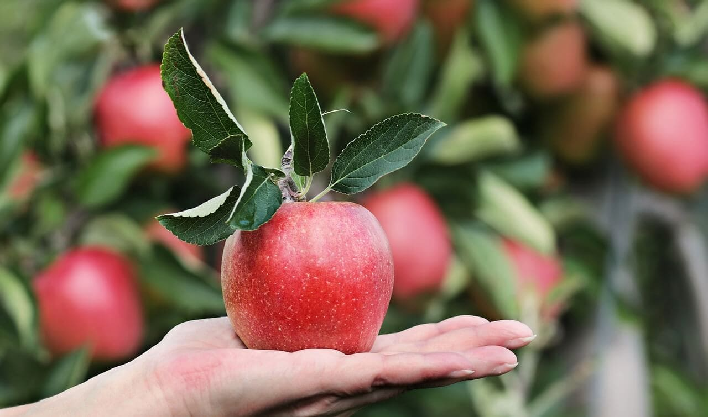

A agricultura sustentável é uma abordagem transformadora que busca garantir a produção de alimentos de maneira ambientalmente responsável, socialmente justa e economicamente viável, neste artigo, exploraremos as ações e práticas que estão revolucionando a forma como cultivamos o nosso alimento e destacaremos os impactos positivos dessas transformaçõesm, com uma visão voltada para o futuro, a agricultura sustentável oferece soluções para os desafios atuais e, ao mesmo tempo, preserva os recursos naturais para as gerações vindouras.
A agricultura regenerativa é um dos pilares da agricultura sustentável, que visa restaurar a saúde dos solos e melhorar a biodiversidade, através de práticas como rotação de culturas, plantio direto, agroflorestas e uso de adubos orgânicos, os agricultores podem reverter a degradação do solo e aumentar sua fertilidade, essas técnicas também contribuem para a retenção de água, prevenção da erosão e sequestro de carbono, desempenhando um papel fundamental na mitigação das mudanças climáticas.
A agricultura orgânica é uma prática que elimina o uso de agrotóxicos e fertilizantes químicos sintéticos, promovendo o cultivo de alimentos mais saudáveis e seguros, essa abordagem valoriza a saúde do solo, o bem-estar animal e a preservação da biodiversidade, ao optar por produtos orgânicos, os consumidores incentivam um sistema de produção que respeita os ciclos naturais, reduz a contaminação ambiental e contribui para a saúde da população.
A permacultura é uma disciplina que busca criar sistemas agrícolas sustentáveis, imitando os padrões encontrados na natureza, através de princípios como observação cuidadosa, aproveitamento de recursos renováveis e interações simbióticas, os projetos permaculturais são projetados para serem eficientes, resilientes e de baixo impacto ambiental, essa abordagem holística promove a autossuficiência e a resiliência das comunidades rurais, além de estimular a conexão entre os seres humanos e o meio ambiente.
A agricultura de precisão é uma ferramenta poderosa que combina o uso de tecnologia avançada, como drones, sensores e sistemas de informações geográficas, para otimizar o uso de insumos agrícolas, reduzir desperdícios e aumentar a eficiência produtiva, essa abordagem permite a aplicação precisa de fertilizantes e pesticidas, com base nas necessidades específicas de cada área, minimizando a contaminação ambiental e maximizando os rendimentos, a agricultura de precisão também contribui para a gestão inteligente dos recursos hídricos e a mitigação dos impactos ambientais.
A agroecologia é uma ciência que busca integrar os princípios da ecologia com as práticas agrícolas, promovendo sistemas produtivos mais equilibrados e sustentáveis, ela enfatiza a diversificação de culturas, a conservação da biodiversidade e a participação ativa das comunidades rurais, a agroecologia valoriza o conhecimento tradicional dos agricultores, promove a agricultura familiar e fortalece os laços entre o campo e a cidade, ao adotar abordagens agroecológicas, podemos criar sistemas alimentares mais resilientes, justos e saudáveis.
A agricultura sustentável representa uma mudança fundamental na forma como produzimos e consumimos alimentos, através das ações transformadoras apresentadas neste artigo - agricultura regenerativa, agricultura orgânica, permacultura, agricultura de precisão e agroecologia - podemos alcançar um futuro onde a segurança alimentar, a proteção do meio ambiente e o bem-estar das comunidades rurais estejam garantidos, ao apoiarmos e adotarmos práticas agrícolas sustentáveis, estamos cultivando o futuro que desejamos, um futuro onde a agricultura e o meio ambiente caminham juntos em harmonia.